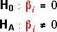
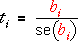

Hypothesis tests for single parameters

This test asks whether the corresponding explanatory variable can be dropped from the full model.
The test statistic is the 'statistical distance' of the least squares estimate, bi, from zero,

and its p-value is found from the tail area of the t distribution with (n - p) degrees of freedom.
Interpretation of p-values
The p-values are interpreted in the usual way as the strength of evidence against the null hypothesis.
However each p-value assesses whether you can drop a single explanatory variable from the full model. After dropping one variable from the full model, the p-values for the other variables will change and they may no longer be unimportant.
If several explanatory variables have high p-values, this does not give evidence that you can simultaneously drop all of them from the model.
Example
The table below shows the p-values for testing whether the individual parameters are zero in the body fat model. Several p-values are higher than 0.1, giving evidence that these variables could be dropped from the full model but this does not mean that we could drop all such variables simultaneously.